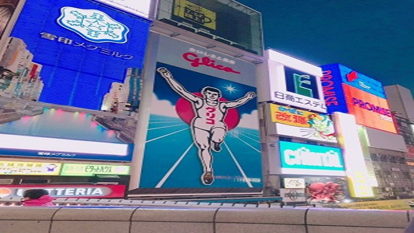
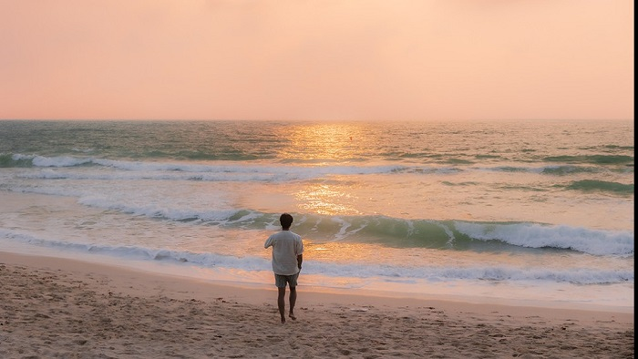
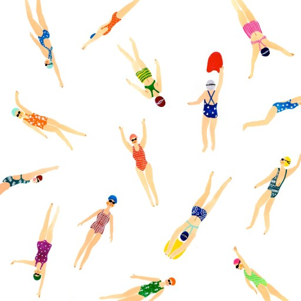
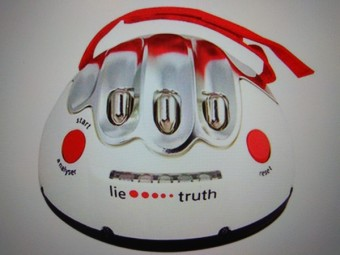

자기소개서
1.기본사항
안녕하세요, 제 이름은 정수원입니다.
먼저 선뜻 다가서지는 못하는 성격이지만 빨리 친해질 수 있도록 노력해보겠습니다.

- 나이: 31
- 거주지: 북구
- MBTI: INFP
2.학력/경력
학교는 동신대를 졸업하였고, 2017년도에 학교 재학 중에 취업연계로 혁신도시에서 IT 회사에 다녔습니다.
3.여행가고 싶은 곳
- 오사카 
- 코사무이 
- 다낭

4.좋아하는 것과 싫어하는 것
수영
거짓말
5.앞으로 보고 싶은 영화나 드라마
- 존윅 - 존 윅의 모든 시리즈를 보기도 했고, 새로운 인물인 견자단이 나오는 시리즈
- 더 글로리 - 사람들의 호불호가 갈리는 드라마이기도 하고, 요즘에도 일어나는 일들을 실화를 바탕으로 만든 드라마